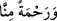

dedi. Cibril (a.s.): “Evet. Ben âkıbetimden endişe ediyordum. Senin sâyende Allah’ın
“O elçi (Cebrâil) güçlü, Arş’ın sâhibi (Allah’ın) katında çok itibarlıdır. O orada
sayılan, güvenilen (bir elçi) dir.” (et-Tekvîr, 81/20-21) buyurarak beni övmesi ile
emniyette oldum.”[220]
Kâşifî der ki: “Keşfü’l-esrâr’da şöyle rivâyet edilmiştir ki Hz. Peygamber’in
ümmetini hiçbir yerde unutmaması, O’nun rahmetindendir. İster Mekke’de, ister
Medîne’de, ister mescid-i saâdetinde ve hâne-i saâdetinde olsun ümmetini asla
unutmamıştır. Arş-ı âlânın zirvesinde ve “kâbe kavseyni ev ednâ” (iki yay arası kadar,
hatta daha da yakın/bk. en-Necm, 53/9) makamında da “Esselâmü aleynâ ve alâ
ibâdillâhis’s-sâlihîn (Allah’ın selamı bize ve Allah’ın sâlih kullarına olsun.)”
buyurması da bunu gösterir. Kıyâmet gününde de makâm-ı mahmûdda şefâat döşeğini
serer ve “ümmetî ümmetî” der.”
Günah yüklü âsîler, âhir zaman nebîsinin eteğine yapışırlar
El, senin eteğindedir ey Nebî, can senin kutlu hırkanın yeninde
Senin şefâat elde edilen huzûrundan ümitsiz kalınmaz
Çünkü her iki âlemde “Rahmeten li’l-âlemîn”sin ey Allah Rasûlü
Büyüklerden birisi şöyle demiştir: “Biz seni ancak âlemlere” mutlak, tam, kâmil,
umûmî, şâmil, câmi bir “rahmet olarak gönderdik.” Gaybî rahmetten; ilmî, aynî,
vücûdî, şuhûdî, geçmiş ve gelecek şehâdet âleminden olan bütün mukayyedâtı kuşatıcı
bir “rahmet olarak gönderdik.” O, ruhlar ve cisimler âleminden akıl sahiplerini ve
diğerlerini bir arada topladı. Âlemlere rahmet olanın, bütün âlemlerden üstün olması
gerekir.
Âyetteki “__WORD__ ifâdesindeki hitap sâdece Nebî (a.s.)’adır. İşâreti ise O’nun
mîrâsına mazhar olması bakımından kıyâmete kadar O’nun meşrebinde olan
vârislerinedir.
Yine büyüklerden birisi şöyle demiştir: “O’nun âlemlere rahmet olması, pek yüce bir
ahlâk üzere olmasından (bk. el-Kalem, 68/4); mülk, melekût, tabîat, nefis, rûh ve sır
gibi bütün mertebelere, mahallerinde riâyet etmesindendir.”
et-Te’vîlâtü’n-Necmiyye’de şöyle der: “Meryem sûresinde Îsâ (a.s.) hakkında “__WORD__(bizden bir rahmet)” (Meryem, 19/21) buyrulmuştur. Bizim Peygamberimiz (a.s.)
hakkında ise: “Biz seni ancak âlemlere rahmet olarak gönderdik.” buyrulmuştur. Bu iki
ifâde arasında büyük fark vardır. Îsâ (a.s.) hakkında “min” harfiyle rahmet sınırlı olarak
zikredilmiştir. Bu yüzden o, Peygamberimiz (a.s.) gönderilene kadar kendisine îman
eden ve getirdiklerine tâbi olanlar için bir rahmet olmuştur. Sonra dîninin nesh
edilmesiyle ümmetinden rahmet kesilmiştir. Bizim Peygamberimiz (a.s.) hakkında ise
rahmet âlemler için mutlak olarak zikredilmiştir. Onun için âlemlerden rahmet
ebediyyen kesilmez. O’nun dünyada rahmet olması, dîninin nesh edilmemesiyledir.
Âhirette rahmet olması ise bütün insanların, hattâ İbrahim (a.s.)’ın bile O’nun şefâatine